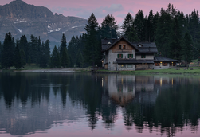

The growing season, when the vegetation in the taiga comes alive, is usually slightly longer than the climatic definition of summer as the plants of the boreal biome have a lower temperature threshold to trigger growth than other plants. Some sources claim 130 days growing season as typical for the taiga

The people of the Sahara are of various origins. Among them the Amazigh including the Tuareg, various Arabized Amaziɣ groups such as the Hassaniya-speaking Sahrawis, whose populations include the Znaga, a tribe whose name is a remnant of the pre-historic Zenaga language. Other major groups of people include the: Toubou, Nubians, Zaghawa, Kanuri, Hausa, Songhai, Beja, and Fula/Fulani

The lake is surrounded by many villages in which Maya culture is still prevalent and traditional dress is worn. The Maya people of Atitlán are predominantly Tz'utujil and Kaqchikel. During the Spanish conquest of the Americas, the Kaqchikel initially allied themselves with the invaders to defeat their historic enemies, the Tz'utujil and K'iche' Maya, but were themselves conquered and subdued when they refused to pay tribute to the Spanish.